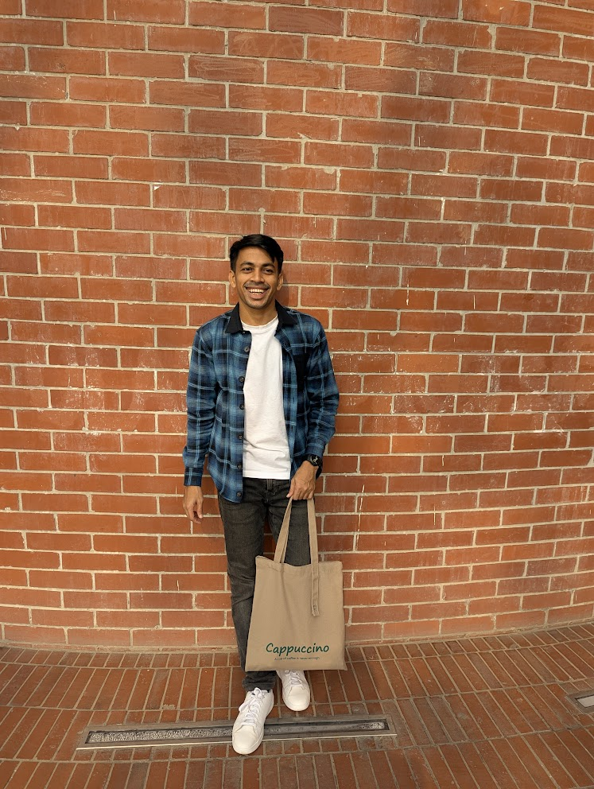

🏫 beyond the work
Loading…

Add to this folder
This page reads from content/beyond.json. Edit the community entry to add notes or memories — they render automatically.
🏫 beyond the work

This page reads from content/beyond.json. Edit the community entry to add notes or memories — they render automatically.